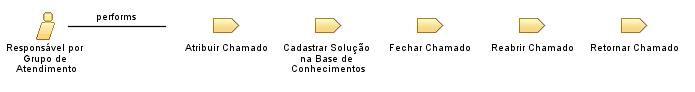

Role: Responsável por Grupo de Atendimento
Membro da equipe responsável pelo Grupo de Atendimento no qual pertence.
Relationships

Primary Performs
Atribuir Chamado
Cadastrar Solução na Base de Conhecimentos
Fechar Chamado
Reabrir Chamado
Retornar Chamado
Additionally Performs
Abrir Chamado